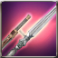
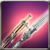
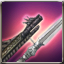
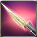
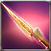
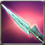
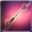
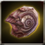
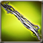
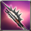

Sharps Rifle Bayonet
Available to equip above Lv. 72 - Musketeer
Bayonets are specially designed to reinforce the power of rifles.
Attributes
Max Sockets: 3
Rating: 18
ATK: 224
Rating: 18
ATK: 224

Available to equip above Lv. 72 - Musketeer
Bayonets are specially designed to reinforce the power of rifles.
Available to equip above Lv. 76 - Musketeer
Bayonets are specially designed to reinforce the power of rifles.

Available to equip above Lv. 80 - Musketeer
Bayonets are specially designed to reinforce the power of rifles. [Accuracy +8]
Available to equip above Lv. 84 - Musketeer
Bayonets are specially designed to reinforce the power of rifles. [Accuracy +8]

Available to equip above Lv. 84 - Musketeer
Bayonets are specially designed to reinforce the power of rifles. [Accuracy +15]
 Royal sapphire x1 Royal sapphire x1 |
 Composite steel x26 Composite steel x26 |
 Pure Talt x74 Pure Talt x74 |
 Pure Quartz x74 Pure Quartz x74 |
 inspire a soul into Steel Piece x1 inspire a soul into Steel Piece x1 |
 Fool Stone x1 Fool Stone x1 |
Available to equip above Lv. 84 - Musketeer
Bayonets are specially designed to reinforce the power of rifles.
Available to equip above Lv. 88 - Musketeer
Bayonets are specially designed to reinforce the power of rifles.
Available to equip above Lv. 92 - Musketeer
[Unique] Bayonets are specially designed to reinforce the power of rifles. [Accuracy +8]
Available to equip above Lv. 92 - Musketeer
Bayonets are specially designed to reinforce the power of rifles. [Accuracy +15]
Available to equip above Lv. 92 - Musketeer
Bayonets are specially designed to reinforce the power of rifles. [Accuracy +8]
Available to equip above Lv. 96 - Musketeer
Bayonets are specially designed to reinforce the power of rifles. [Accuracy +15]
Available to equip above Lv. 100 - Musketeer
Bayonets are specially designed to reinforce the power of rifles. [Accuracy +15]

Only Veteran + can equip - Musketeer
A rifle that looks like a diamond dragon. [+190 Lightning Damage]

Only Veteran + can equip - Musketeer
A bayonet that looks like a red dragon. [+190 Fire Damage]

Only Veteran + can equip - Musketeer
A bayonet that looks a blue dragon. [+190 Ice Damage]

Only Veteran + can equip - Musketeer
Fitted with a bayonet that resembles the canine tooth of a giant serpent.
 Dragon Heart x1 Dragon Heart x1 |
 Cast iron x100 Cast iron x100 |
 Mega Etretanium x100 Mega Etretanium x100 |
| Mega Ionium x100 |
 Snail shell x30 |
| Fool Stone x1 |

Available to equip above Expert Level - Musketeer
The star of Aquarius. Brimming with unfathomable power..
 Enchantchip Veteran x3 Enchantchip Veteran x3 |
 Melee Weapon Crystal - Lv 30 x1 Melee Weapon Crystal - Lv 30 x1 |
 Ancient Rune - Ti x50 Ancient Rune - Ti x50 |
| Ancient Rune - Ar x50 |
 liquid of Heaven x10 liquid of Heaven x10 |
| Fool Stone x1 |

Available to equip above Expert Level - Musketeer
Magical firearm imbued with the power of darkness. [+60 Mental additional ATK]
 Piece of Defrodain x1 Piece of Defrodain x1 |
| Dragon Heart x2 |
 Mana stone x500 Mana stone x500 |
| liquid of Heaven x50 |
 Symbol of Darkness x5 Symbol of Darkness x5 |
| Fool Stone x1 |